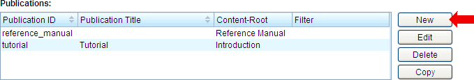
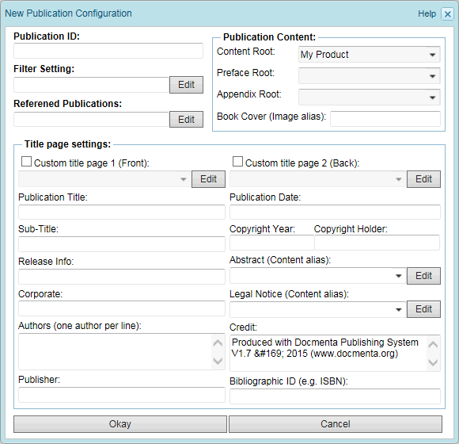
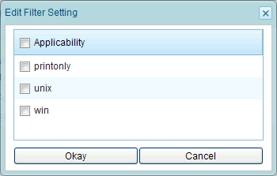

2.6.1.1. Creating a publication configuration
Click the "New" button beside the publication configuration list, to create a new publication configuration (see screenshot below).

Figure 2.6.2. Create a new publication configuration
The following dialog will be opened which allows you to enter the publication configuration settings:

Figure 2.6.3. Dialog for creating a new publication configuration
See below for a description of each publication configuration input field:
Publication ID
A unique name identifying the publication configuration. This field is mandatory.
Filter Setting
By default the filter setting is empty, i.e. the content will not be filtered during publication export. Click the "Edit" button to change the filter setting of this publication configuration. This will open a dialog which allows to select one or more applicability flags. See the following screenshot for an example:

Figure 2.6.4. Edit filter setting
Select the desired applicability flags. You can easily select all applicability flags by selecting the checkbox in the header of the list.
Referenced Publications
Click the "Edit" button to select the referenced publications. See Section 1.13.5, “Inter-publication links” for more information.
Content Root
Select the root section of the publication. The sub-sections of the root section will be the 1st-level chapters within the publication. This field is mandatory.
Preface Root
Select the section which contains the content that shall be inserted in the preface of the publication. This field is optional.
Appendix Root
Select the section which contains the content that shall be inserted in the appendix of the publication. This field is optional.
Book Cover
The alias name of an image that shall be used as book cover for the publication. Currently the output of a book cover is only supported by the PDF and eBook format (though for HTML-based output the custom title page functionality as described below can be used to insert an image on the start-page).
If an image with the alias coveralias_draft exists, where coveralias is the entered alias name, then this image will be used as cover image for draft exports of the publication. For example, if the alias name my_cover has been entered, and the images my_cover.png and my_cover_draft.png exist, then the former image is selected for released publications whereas the later is selected for draft publications.
For PDF output the export of the cover page can be further controlled in the PDF output-configuration (see Section 2.6.2.1.4, “PDF output settings”). See also the predefined block-style "coverpage" in the section Section 2.4.2, “Pre-defined styles” which can be used to define a background-color for the cover page.
Hint: By the creation of different variants of the cover image and the definition of filter settings for the output configurations, it is possible to select different cover images for different output formats (see Section 1.10.2, “Node variants” for details).
Custom title page 1 (Front-side)
This field is optional. By default the layout for the front-side of the title page is pre-defined. The front-side of the default title page shows the publication title, followed by the sub-title and the corporate and author names (if existent respectively).
The formatting of the default title-page can be partly controlled by pre-defined block-styles. For example, the formatting of the publication title on the title-page is defined by the block-style header1. See Section 2.4.2, “Pre-defined styles” for the complete list of pre-defined styles.
To provide your own layout for the front-side of the title page, check the "Custom title page 1" checkbox and enter the alias name of the content node that shall be used as title page. Following placeholders can be used in the content node:
| Placeholder | Description |
|---|---|
|
%author1
%author2 ... %author9 |
The first, second, ..., 9th author that has been entered in the "Authors" field of the publication configuration. |
|
%authors
|
The complete list of authors that has been entered in the "Authors" field of the publication configuration. Each author is output on a separate line and formatted with the pre-defined style "author". |
| %author_list |
The complete list of authors that has been entered in the "Authors" field of the publication configuration. The authors are output on a single line and separated by one of the Gentext values authorgroup|sep2, authorgroup|sep or authorgroup|seplast.
The separator authorgroup|sep2 is used to separate two author names. If more than two authors exist, then the author names are separated by authorgroup|sep, except for the last two names which are separated by authorgroup|seplast. If the corresponding Gentext value is not defined, then the comma (,) character is used as default separator. See Section 1.13.4, “Gentext settings” on how to edit the Gentext configuration.
|
| %biblio_id | The bibliographic identifier that has been entered in the "Bibliographic ID" field of the publication configuration. |
| %copy_holder | The copyright holder that has been entered in the "Copyright Holder" field of the publication configuration. |
| %copy_year | The year that has been entered in the "Copyright Year" field of the publication configuration. |
| %corporate | The name of the corporation that has been entered in the "Corporate" field of the publication configuration. |
|
%credit1
%credit2 ... %credit9 |
The first, second, ..., 9th credit line that has been entered in the "Credit" field of the publication configuration. |
| %credits | The complete credits text that has been entered in the "Credit" field of the publication configuration. |
| %pub_date | The date that has been entered in the "Publication Date" field of the publication configuration. |
| %pub_subtitle | The publication sub-title that has been entered in the "Sub-Title" field of the publication configuration. |
| %pub_title | The title that has been entered in the "Publication Title" field of the publication configuration. |
| %publisher | The name of the publisher that has been entered in the "Publisher" field of the publication configuration. |
| %release_info | The text that has been entered in the "Release Info" field of the publication configuration. |
Hint: By the creation of content node variants and the definition of filter settings for the output configurations, it is possible to select different title pages for different output formats (see Section 1.10.2, “Node variants” for details).
Custom title page 2 (Back-side)
This field is optional. By default the layout for the back-side of the title page is pre-defined. The back-side of the default title page shows all information entered on the "Title page settings" panel, i.e. the publication title and date, the sub-title, the corporate and author names, the copyright and release information, the abstract, the legal notice and the credits (if existent respectively).
The formatting of the default title-page can be partly controlled by pre-defined block-styles. For example, the formatting of the publication title on the back-side of the title-page is defined by the block-style title_back. See Section 2.4.2, “Pre-defined styles” for the complete list of pre-defined styles.
To provide your own layout for the back-side of the title page, check the "Custom title page 2" checkbox and enter the alias name of the content node that shall be used. The same placeholders as for the front-side of the title page can be used (see table above).
Hint: By the creation of content node variants and the definition of filter settings for the output configurations, it is possible to select different title pages for different output formats (see Section 1.10.2, “Node variants” for details).
Publication Title
Provide a title for the publication. This field is optional. If this field is empty, then the title of the content root (see above) will be used as publication title.
Sub-Title
A sub-title for the publication. This field is optional. By default, the sub-title will appear on the title page below the publication title.
Publication Date
The publication or revision date. This field is optional. Besides fixed text, following placeholders can be used:
| Placeholder | Description |
|---|---|
| %d | The day of month of the export date (number between 1...31). |
| %H | The hours of the export time (number between 0...23). |
| %m | The month of the export date (number between 1...12). |
| %M | The minutes of the export time (number between 0...59). |
| %S | The seconds of the export time (number between 0...59). |
| %Y | The calendar year of the export time (4 digit year). |
For example, if the text "%d-%m-%Y" is entered, and the publication is exported on the 2nd of July 2014, then the text "02-07-2014" is shown on the exported title-page.
Copyright Year/Holder
Information about the date and holder of the publication copyright. These fields are optional. The placeholder %Y can be entered in the field "Copyright Year", to let Docmenta automatically insert the current year (i.e. the year of the export time).
Release Info
Information about a particular release of a publication. For example, the release information may include a version number. This field is optional.
Besides fixed text, the placeholder %v can be used to insert the current version number of the product. For example, if the text "Version %v" is entered, and the current version number of the product is "1.2", then the text "Version 1.2" is inserted in the exported title-page.
Furthermore, the export date/time can be inserted by using any of the placeholders defined for the publication date (%d, %m, %Y, ...). See the complete list of placeholders in the description for "Publication Date" above.
Abstract
A summary text describing the content of the publication.
Enter the alias name of the content node that contains the summary text. Alternatively you can select the alias name from the drop-down list. This field is optional.
Hint: By the creation of content node variants and the definition of filter settings for the output configurations, it is possible to select different abstract nodes for different output formats (see Section 1.10.2, “Node variants” for details).
Corporate
The name of a corporation. This field is optional.
Legal Notice
The legal notice identifies a statement of legal obligation, requirement, or warranty. For example it explains copyright, trademark, and other legal formalities of a document.
Enter the alias name of the content node that contains the legal notice. Alternatively you can select the alias name from the drop-down list. This field is optional.
Hint: By the creation of content node variants and the definition of filter settings for the output configurations, it is possible to select different legal notices for different output formats (see Section 1.10.2, “Node variants” for details).
Authors
The names of the authors. Put each author on a separate line. This field is optional.
Credit
Names of persons or entities, other than an author or corporate, credited in the publication. Put each name on a separate line. This field is optional.
Publisher
The name of the publisher. This field is optional.
Bibliographic ID
A bibliographic identifier. For example, use this field to enter the ISBN number. This field is optional.